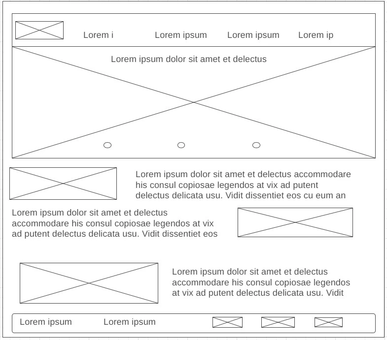
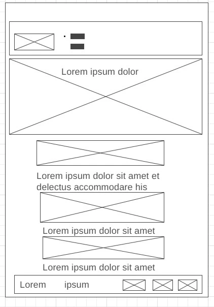

Bindura Chamber of Commerce. This name represents the city of Bindura in which the chamber operates.
Bindura Chamber of Commerce acts as a regional economic catalyst, leadership convener, and community champion. The website will promote business through member services, economic and community development, and public policy that balances economic prosperity.
Another purpose of the website is to provide a centralized hub for information about local events, resources, and initiatives that support the local business community.
Palette URL:
https://coolors.co/03c03c-91d379-a0e885-fff2f1-a09be7-ffffff-000000The color schema for the Bindura Chamber of Commerce website will use a combination of the following colors:
| Primary | Secondary | Accent 1 | Accent 2 | Accent 3 | Accent 4 | Accent 5 |
|---|---|---|---|---|---|---|
| #03C03C | #fff2f1 | #91d379 | #a0e885 | #a09be7 | #ffffff | #000000 |
The website will use the following font selections:
Here is a rough sketch of the home page layout for the Bindura Chamber of Commerce website:
 